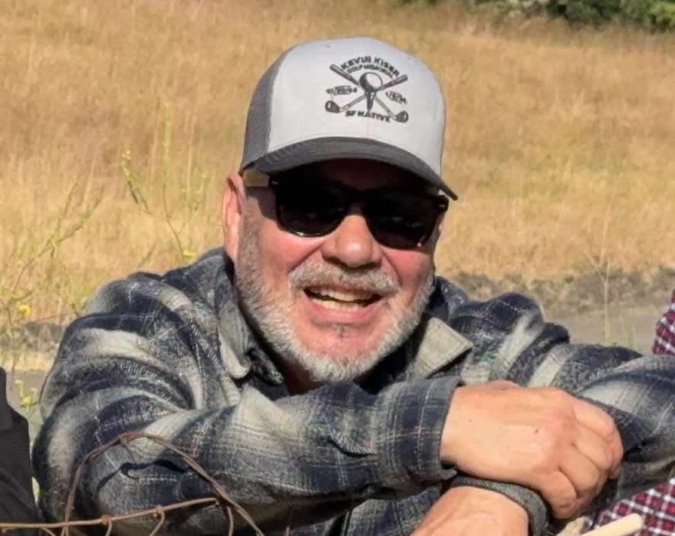
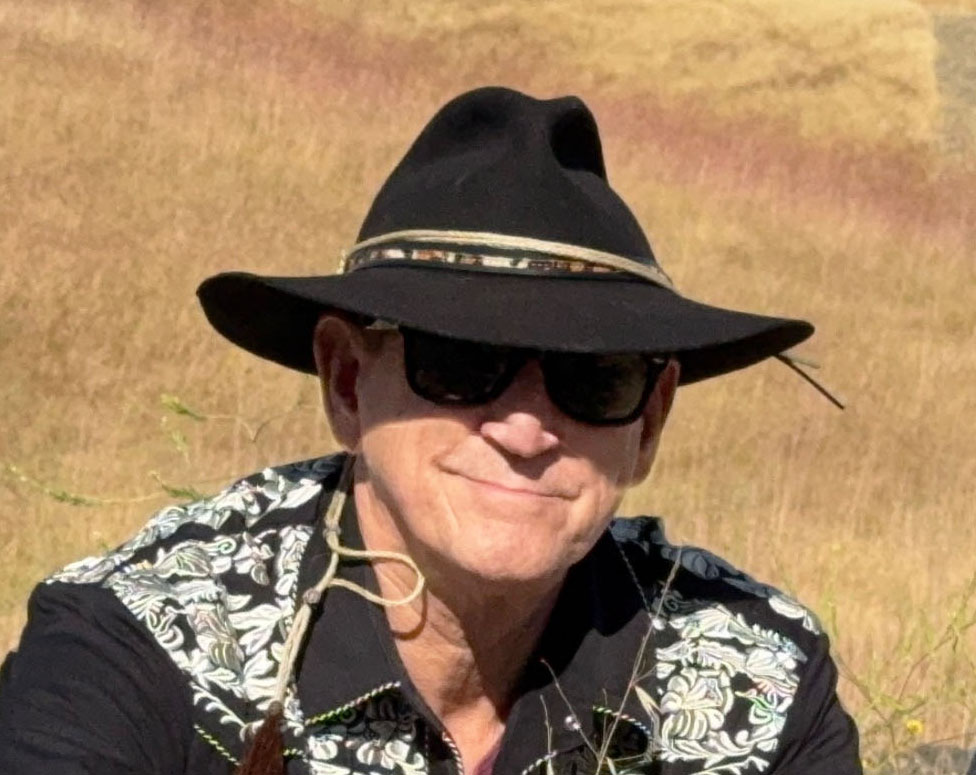
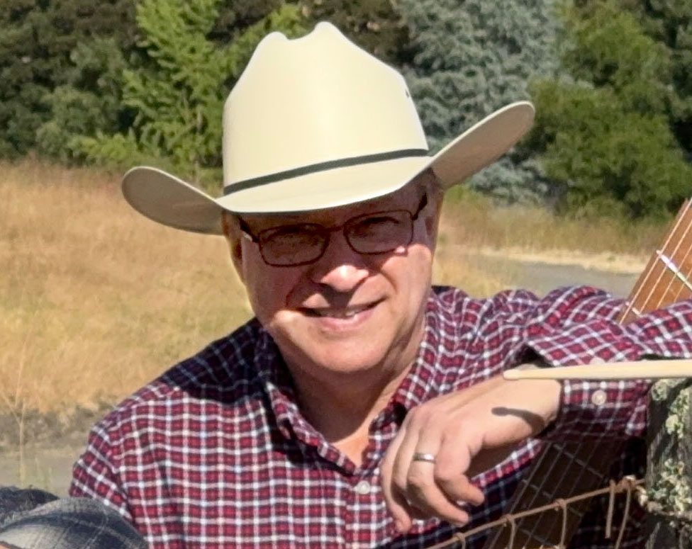

Band Members

Jeff
Role: Drummer/Vocals
A lifelong drummer, vocalist, and songwriter with 50+ years of experience, I blend strong technical training with decades of performance in rock, blues, and hard rock. I’m dedicated, collaborative, and driven by a genuine love of music.

Robby
Role: Vocals/Guitar
Robby was fortunate as a young boy to taste country life. Robby was exposed to rural living, nature, riding horses and growing plants for food. He came to country music through the back door of Southern rock from bands like, the Allman Brothers, the Outlaws, ZZ Top and Lynyrd Skynyrd. Delving into their roots, he found a deeper love and appreciation for many early country artists. By studying agriculture in college, along with experiencing farm life in later life, only added to his deep appreciation of all country music. He continues his love of Ag life by playing country, growing a crop and riding his 1953 Ford tractor.

Mark
Role: Bass
At ten years old, Mark Carlson bought his first bass guitar from a classified ad. It was a 1973 Fender Jazz he played in school pep, vocal, and jazz bands. His musical journey, dormant for decades, was reignited during the COVID lockdowns, inspiring him to post various bass cover videos online. Today, his bass collection has grown somewhat, but is strictly limited by the number his wife will tolerate.